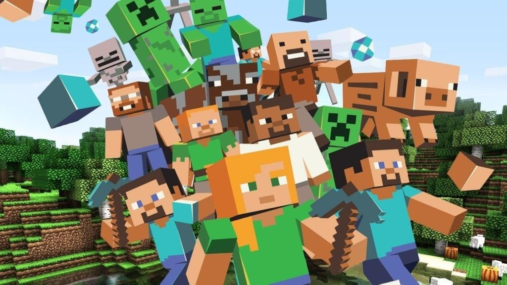

Foi lançado inicialmente dia 18 de novembro de 2011 É um jogo eletrônico, que tem por objetivo básico construir e quebrar blocos. O jogo foi criado pelo sueco Markus Persson, lançado em 2011, inicialmente para PC e posteriormente para outras plataformas como Playstation 3, Playstation 4, Xbox 360 e Xbox One.
O mundo de Minecraft é virtualmente quase infinito e gerado proceduralmente à medida que os jogadores o exploram, usando um mapa ou uma bússola no momento da criação do mundo. O mundo é dividido em biomas que variam de desertos a selvas e campos de neve; alguns terrenos incluem planícies, montanhas, florestas, cavernas e vários corpos de lava e água. O sistema de tempo no jogo segue um ciclo dia e noite, e um ciclo completo dura vinte minutos em tempo

Markus Alexei Persson, mais conhecido como Notch, é um programador sueco. Também é fundador da Mojang Studios, na qual desenvolveu o título mais conhecido da empresa: Minecraft. Em novembro de 2014, Markus deixou a Mojang Studios quando foi vendida para a Microsoft por US$ 2,5 bilhões.
Sucesso da Mojang, o jogo Minecraft alcançou um feito histórico quando celebra os 10 anos de existência. O título atingiu a marca de 176 milhões de unidades vendidas a nível global, de acordo com dados divulgados pela Microsoft. O número coloca o game como o mais vendido da história. O concorrente mais próximo seria o Tetris. No entanto, como muitas das suas informações de mercado foram perdidas, a quantidade estimada varia entre 170 e 400 milhões de unidades comercializadas.
